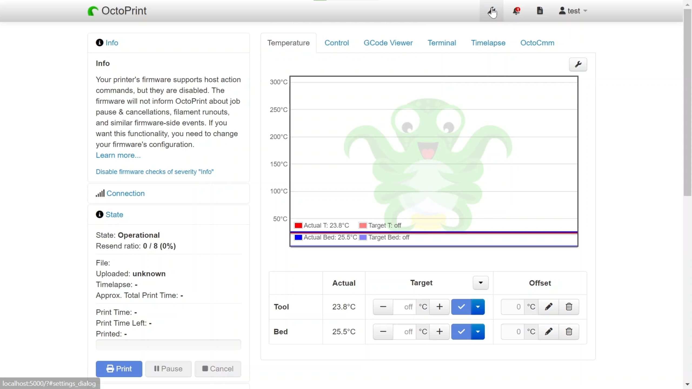
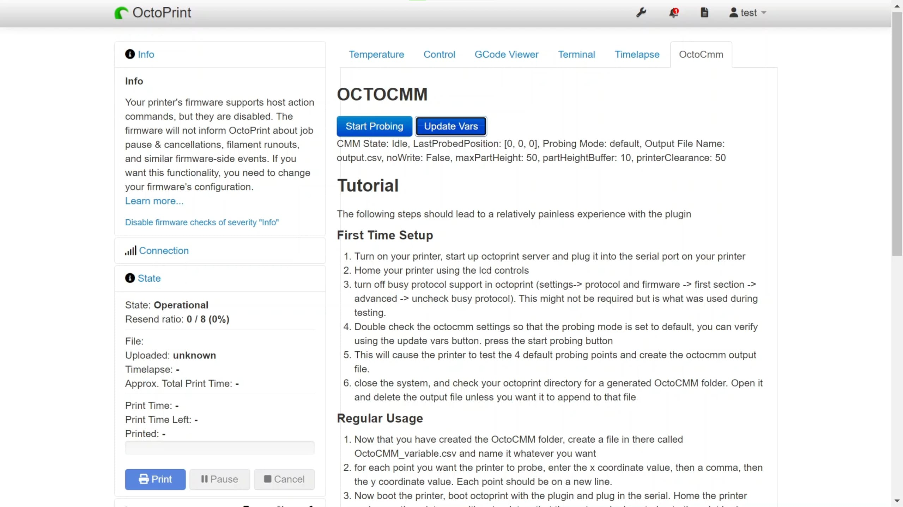
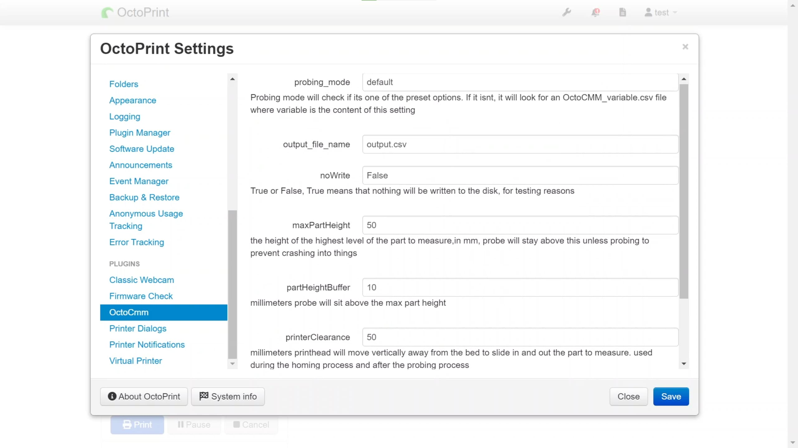

CMMs, or coordinate measuring machines, are expensive. I had the idea to use the BLTouch proximity sensor on my 3d printer to probe objects on the print bed. Creating a cheap, although surely less accurate, CMM.

This was done using a project called octoprint, which exposes an API to use different features of 3d printers. OctoCMM is a plugin I wrote for octoprint which implements this project.
 The plugin details how to use the plugin to probe specific points on your model of choice and how to retreive the data produced by the BLTouch sensor. The plugin also has customizable settings through the settings page.
